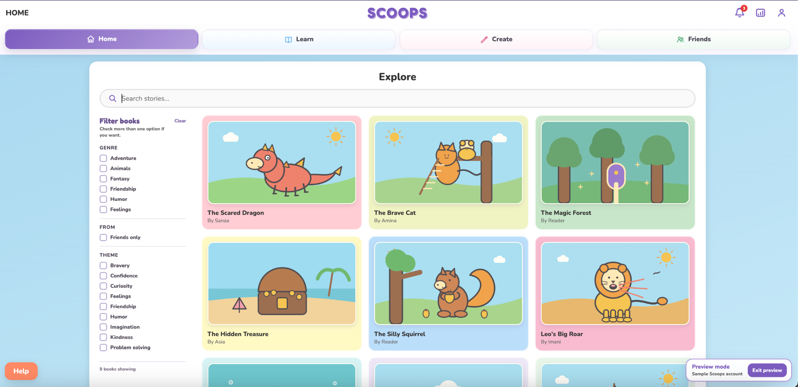
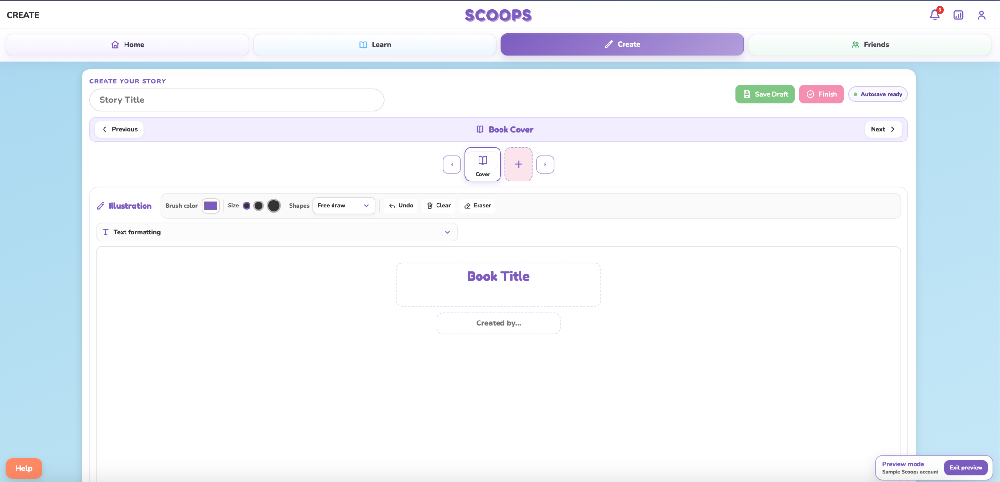
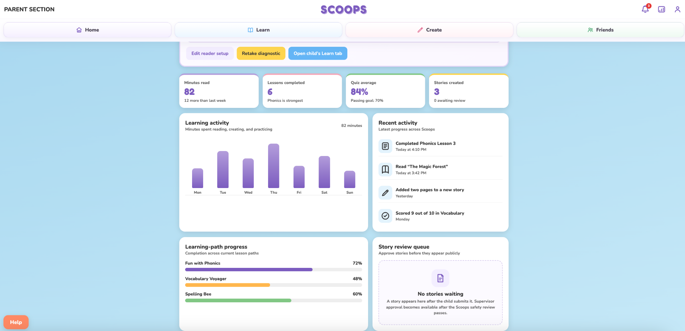

CAPSTONE → ONGOING PRODUCT2026



Scoops began as my senior capstone and grew into a working literacy and creative-expression platform. I designed the flows, interface, learning features, and front end while continuing to revise the product as I built it.